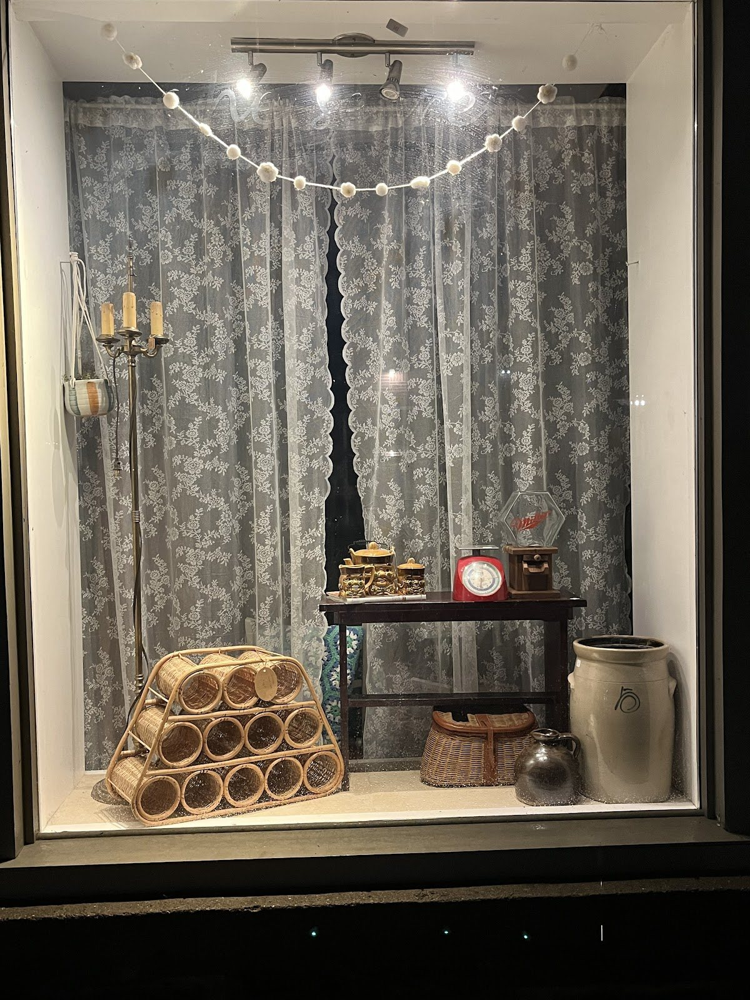

Lamps & lighting
Hurricane lamps, glass oil lamps and table lamps.
Source: Listing photos

Vintage · Antiques · Thrift · 218 St Lawrence St, Merrickville
“Born out of a love for thrift, Too Good to Be New encompasses a dream to share that love!” Lamps, glassware, ironstone and furniture with a past, on Merrickville’s main street.
Open Thursday to Sunday. Closed Monday to Wednesday.
In the shop
Based on the shop’s listing photos and reviews. Stock changes all the time, so follow the Facebook page for new finds.
Hurricane lamps, glass oil lamps and table lamps.
Source: Listing photos
Amber glass, ironstone pitchers and basins, crystal.
Source: Listing photos
Secretary desks, cabinets and painted vanities.
Source: Listing photos
“Went above and beyond to source what I was looking for and even get it to me.”
Source: Debbie Maure, Google
Photos
Photos from the shop’s Google listing. Tap to enlarge.
Reviews
5.0 ★ from 6 Google reviews (checked Oct 31, 2026). Quotes are word for word.
★★★★★
“The staff at Too Good to be New went above and beyond to source what I was looking for and even get it to me.”
★★★★★
“Great place to shop for all kinds of vintage articles”
★★★★★
“Such a great store. Love the atmosphere and the treasures.”
★★★★★
“A beautiful little antique boutique. Worth the visit. Plus the owner is very kind and sweet. Highly recommend checking out!”
★★★★★
“Loved it !”
Hours from the Google listing, checked Oct 31, 2026. The exa.ai copy of the listing and the shop’s Facebook-based listings show the same hours.
218 St Lawrence St, Merrickville, ON K0G 1N0
toogoodtobenewmerrickville@gmail.com
No phone number is published. Email or message the shop on Facebook.